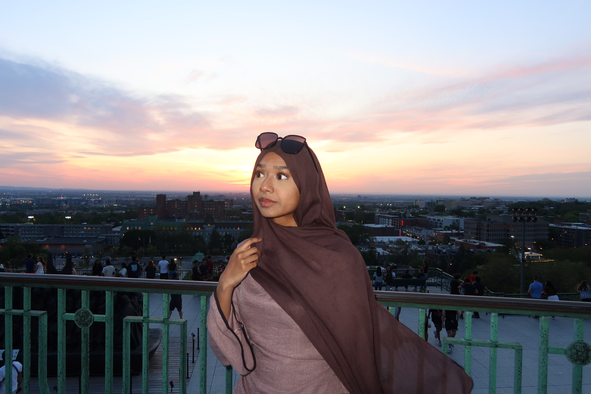
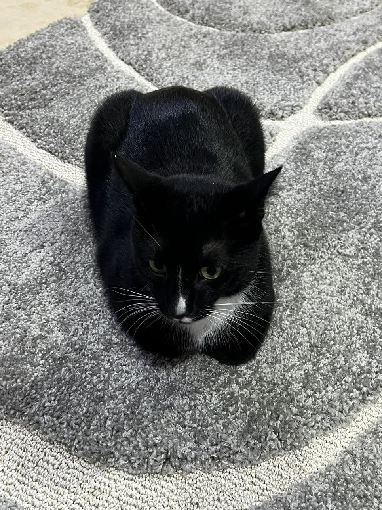
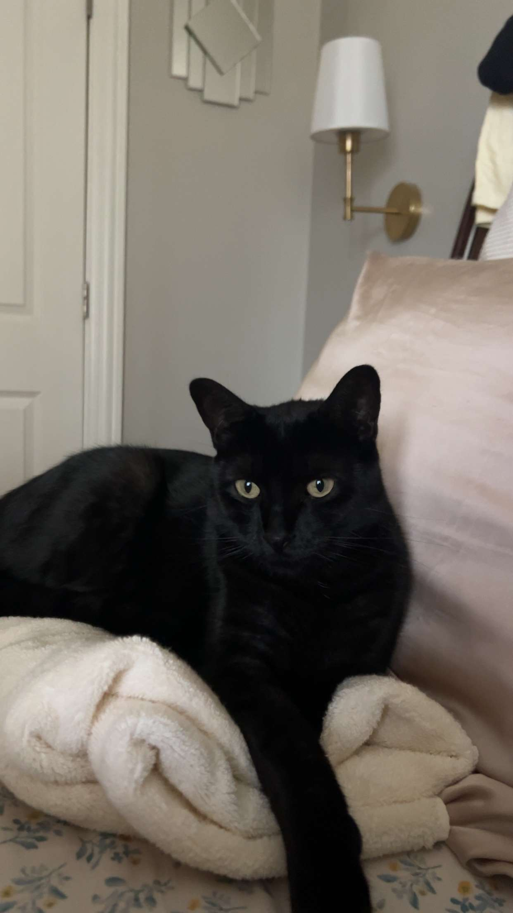
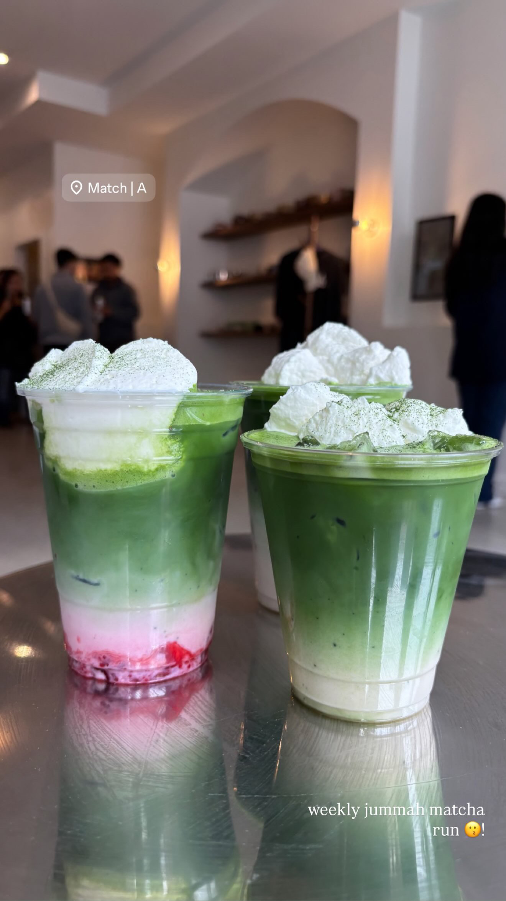

My name is Aisha Ansari. I am a third-year Cognitive and Behavioral Neuroscience major at Loyola University Chicago.
I currently work part-time at an eye doctor's office, but my passion mainly lies in community work: I love volunteering and spending time in youth groups.
I love cats, matcha, coffee, and nature. I have two cats of my own, a black cat and a tuxedo cat who I don't shut up about. I try to make the best out of life being me.



